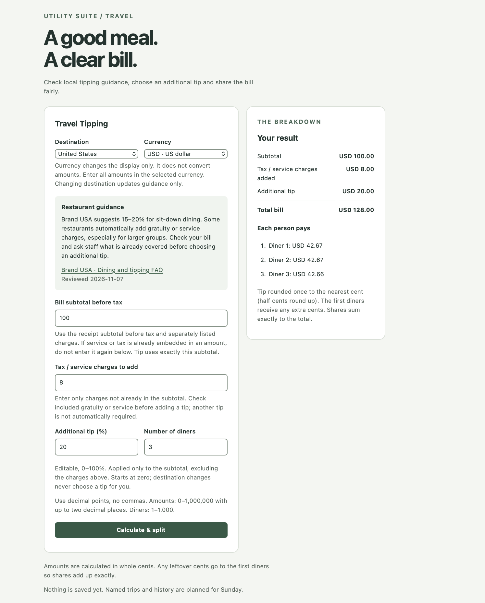
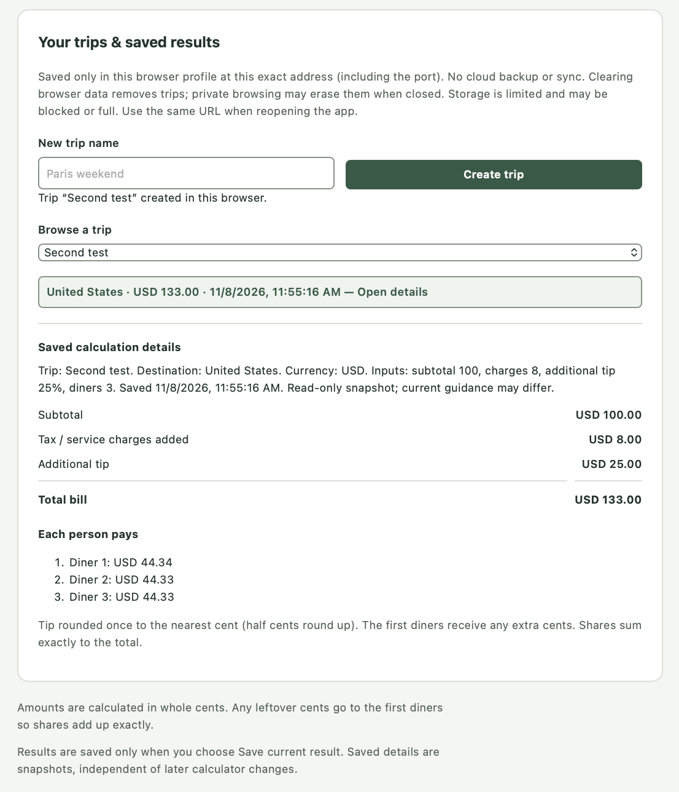

Trips stay in your browser, with no cloud backup or sync. Existing localhost trips do not transfer to the public app.
Build 1 due: Monday, November 9, 2026 at noon, New York time.
01 · Living product requirements
PRD version 2
The problem
My phone has a few built-in tools, but more specific tasks usually send me to another website or app. I often have to deal with ads, features I don't need, and uncertainty about what data the app collects. If I need the result later, I may have to do the calculation again.
The product
I want to bring useful everyday tools into one ad-free app with a consistent layout. Users will be able to pin favorites, choose preferred units and currency, and save selected results together. These are product goals; the full collection is not implemented.
First user
Simran is my first intended user and is planning a trip to Hong Kong. I will ask Simran to try calculating, splitting, saving and reopening a result. Feedback is still pending.
HKD is supported as a conversion target. Hong Kong tipping guidance and HKD bill input are not implemented. These remaining gaps are topics to discuss with Simran, not confirmed user requests.
Before
Search tipping customs, open a calculator, divide the bill and save a screenshot—or lose the result.
After · intended experience
Check the destination guidance, calculate and split the bill, save the result to a trip and find it again later.
What changed in PRD v2
Anirudh tested my app and pointed out that equal splitting does not fit dinners where people order different amounts. He suggested entering each person’s items or subtotal and allocating tax, charges and tip proportionally. I implemented the smaller response: per-person subtotals, while keeping Equal split as the default. Item-by-item entry and receipt scanning remain out of scope.
By person requires the diner subtotals to match the bill subtotal exactly. Individual zeros are allowed, but the combined subtotal must be positive. Charges and the rounded whole-bill tip are allocated separately in integer cents using largest fractional remainder, with ties settled by diner order. Each result shows the diner’s subtotal, allocated charges, allocated tip and final share.
New saved snapshots include the split mode and proportional breakdown. Existing equal-split history still opens without rewriting its values. Editing a subtotal, diner count or split mode clears stale results and conversion estimates until recalculation. New inputs and results remain masked in replay and are excluded from custom event properties.
One core workflow
Choose destination → calculate tip → split equally or by person’s subtotal → save to trip → retrieve saved result.
Build 1 foundation: Restaurant tipping guidance, additional tip calculation, equal bill splitting, explicit saving to a named trip and retrieval of saved results.
Three non-goals for Build 1
Accounts and cloud synchronization.
Payments, bank connections and receipt scanning.
The complete utility catalog and live currency conversion.
Riskiest assumption & architecture · preliminary
Travelers need guidance they can interpret correctly, especially when service is already included. Guidance sources have been reviewed, and automated checks cover additional tips, rounding and exact share totals. Earlier builder checks and Anirudh’s feedback are recorded below. The 30/70 result, mismatch validation and saved By person reopening passed my local checks; other manual checks remain pending.
Implemented flow (public and local): Destination guidance + bill inputs → tip and equal or proportional split calculation → result → explicit save to a named trip → retrieval. The calculator uses HTML/CSS and JavaScript with Vite and Node’s built-in test runner. Saved snapshots use localStorage in the same browser profile and origin. Clearing browser data removes history; private browsing may erase it when closed. There is no cloud backup or synchronization. This Product Page is separate standalone HTML/CSS.
02 · Current implementation status
Travel Tipping web prototype
The prototype provides destination guidance, an editable additional tip, an exact bill split, named trips and explicitly saved history. Open the web version using the link above, or run it locally for development.
Documentation: PRD v2 and a Build 2 log, with Build 1 evidence retained below.
Published US, UK (London-based) and France guidance with sources and reviewed dates; USD/GBP/EUR bill display; editable additional tip and integer-cent Equal or By person splitting.
Published Named trips, explicit saving and retrieval of saved result snapshots, including original inputs, individual shares and timestamps.
Pending Remaining By person manual checks, phone testing, Simran’s feedback and remaining analytics checks. Build 2 commit 9f87215 was pushed and deployed.
Reference-rate conversion: The calculator requests a currency-pair reference rate from Frankfurter v2 and computes the estimate in the browser; it does not send bill amounts or trip names. The public API is free and requires no key or account. Its official documentation states no daily/monthly quotas, with rate limiting to prevent abuse. Reference rates are not live market quotes or guaranteed card/cash rates; availability is not guaranteed. No paid API plan was enabled. Official API documentation. The USD/GBP/EUR bill selector still changes display only; conversion is a separate action with USD/GBP/EUR/HKD targets, and estimates are not saved.
Earlier work & individual course work
An earlier version of Utility Suite was built with my brother. This course project is new individual work. This course’s new individual work includes the documentation and local tipping calculator. Any earlier code or assets reused later will be identified explicitly.
03 · Product showcase
Prototype screenshot or GIF

Actual local calculator screenshot, November 7, 2026. A $100 subtotal + $8 charges + 20% additional tip produces a $128 total, split into $42.67, $42.67 and $42.66. This screenshot records Saturday’s calculator; Sunday’s saved-trip workflow is shown below.

Actual local saved-trip screenshot, November 8, 2026. The separate “Second test” trip contains a $133 result with its inputs, timestamp and individual shares. I checked that saving this result did not change the first trip’s $128 history.
Build 2 evidence: Four November 15 Build 2 screenshots are included: the By person result (70/30 diner order), the Frankfurter conversion with rate/date, reopened “Live test” details, and PostHog event receipt from the public calculator. The November 7–8 images remain historical Build 1 evidence. The PostHog screenshot does not show replay playback or conversion_failed receipt; those statuses are recorded separately. View the four screenshots below.
November 9 publishing update: the calculator is packaged for the app/ URL on the existing GitHub Pages site. The two-minute video and later launch checks remain planned for Build 5.
04 · Weekly build log
Build 1 · November 7–9
What works / what shipped
I built the local tipping calculator with destination guidance, currency display, editable additional tips, validation and exact cent allocation. I can now create named trips, explicitly save a current calculation and reopen saved details. Saved snapshots remain independent of later input changes. The calculator and saved-trip workflow were built and checked locally on November 7–8. The November 9 publishing update adds a web app link to my public Product Page. The Product Page includes screenshots of the calculator and saved trip history.
Learning
This was my first time using Codex. I learned how to set up my GitHub repository, connect Codex to it and use Terminal to run the app locally. I also learned how to commit changes and push them to GitHub.
Working through one task at a time helped me understand the process. I gave Codex a specific request, reviewed its proposed changes and checked the result before moving on. I’m getting more comfortable explaining what I want to build, what should stay unchanged and how to check whether it works.
I also tested the calculator myself. I checked the bill split, tried an invalid number of diners and reviewed the layout in a smaller browser window. Splitting $128 between three people showed why rounding matters: two people pay $42.67 and one pays $42.66 so the shares add up correctly.
November 9 learning
November 9, 2026: I connected Codex to Icerynk and used it to review course requirements.
Changes / problems
I kept the 55-utility vision focused on one travel dining workflow for Build 1. I used integer cents so every share adds up correctly. I also learned that Safari’s keyboard navigation needed “Press Tab to highlight each item on a webpage” enabled before I could tab to saved details.
My manual browser checks
I verified the $128 calculation, saved it and reopened it after closing the tab. I also checked zero-diner validation and successfully recalculated after correcting it on Saturday. Changing the tip disabled saving until I recalculated. I saved a $133 result to a separate trip without changing the first trip’s history. The smaller desktop browser layout stayed readable; this was not a phone test. Keyboard navigation to saved details worked after I enabled Safari’s “Press Tab to highlight each item on a webpage” setting. These were my own checks.
Automated verification
I recorded Codex’s completed automated run: 41 passing tests, a successful production build and passing whitespace checks. The tests cover the original calculation rules, saved snapshots, stale-result rejection and storage failures. These automated checks are separate from my browser checks.
Analytics setup
I created a PostHog account on November 7, 2026 using the Free plan. The Build 2 log below records the later installation, observed events/replay and remaining verification.
Outside user feedback
Feedback from Simran is still pending. My own checks are not outside user testing.
Actual Build 1 costs (November 7–9)
Additional project spending so far: $0. I used Codex through my existing ChatGPT Pro subscription. I have not tracked token usage or allocated the subscription cost to this project.
Actual Build 1 hours (November 7–8)
I spent approximately 1.5 hours on Saturday, November 7, and approximately 50 minutes on Sunday, November 8, 2026. My total so far is approximately 2 hours and 20 minutes.
Build 2 · November 15 implementation · Due November 16 at noon, New York time
Feedback and response
Anirudh’s feedback showed that equal splitting does not reflect what each diner ordered. I added By person subtotals and kept Equal split as the default. I have not added item-by-item receipt entry.
What works in automated checks
The $100 subtotal, $8 charges, 20% tip and diner subtotals $30/$70 produce $38.40 and $89.60. Integer-cent allocations preserve all component totals. Tests also cover rounding ties, zero shares, invalid inputs, switching modes, stale-result clearing, custom saved snapshots and legacy history.
Other Build 2 work preserved
I kept the separate Frankfurter reference-rate conversion and the PostHog integration. Conversion still uses the whole bill total; saved snapshots keep the original currency. The proportional inputs and breakdown are masked, and analytics events contain no amounts or diner names.
Analytics evidence so far
I observed pageviews, ui_clicked, calculation_succeeded, conversion_succeeded and result_saved locally, and previously observed saved_details_opened locally before By person was added. PostHog also received events from the public calculator URL. The public replay played with visible inputs and saved content masked. Receipt of conversion_failed remains pending. The November 15 PostHog screenshot specifically confirms public ui_clicked, saved_details_opened, result_saved, conversion_succeeded and calculation_succeeded. Other event checks remain pending.
Automated verification
The full suite passed 106 tests. The production build, publishing build, HTML checks and whitespace checks passed. Commit 9f87215 was pushed and deployed; the Product Page, calculator and required assets were checked separately from browser interactions. These automated checks do not replace browser verification.
Manual verification
My local browser checks passed: subtotals $30/$70 with $8 charges and a 20% tip produced $38.40/$89.60. The saved result reopened under “Second test,” retaining By person mode and the complete breakdown. Subtotals $30/$60 against a $100 bill subtotal showed the correct mismatch error. My public browser checks produced shares of $38.40 and $89.60. USD 128 converted to an estimated EUR 115.56 during the observed test; later estimates may differ with the reference rate. The “Live test” saved result reopened with By person mode and its complete breakdown. Other manual checks remain pending, including mode changes, zero and invalid individual subtotals, whole-bill conversion after mode changes, old saved results, exhaustive replay/privacy checks, keyboard/phone checks and Simran’s feedback.
Hours and costs
Recorded active project time: approximately 1.5 hours November 7, 50 minutes November 8, and 2 hours Sunday, November 15, 2026: 4 hours 20 minutes total. Recorded project spending: $27 for Codex credits used for development on November 15. This is development spending, not a per-user-run API cost. My existing ChatGPT Pro subscription remains separate and unallocated to this project. Token usage has not been measured. Runtime API cost per user run remains unmeasured; Frankfurter uses its free public API.
Publication and submission
Build 2 commit 9f87215 was pushed to origin/main and deployed on GitHub Pages. The public Product Page contains PRD v2 and this Build 2 log; the calculator includes By person splitting and conversion. Submission to Icerynk remains pending. The screenshots and verification notes below document the observed Build 2 results.
November 15, 2026 calculator evidence. The screenshot uses diner subtotals in 70/30 order: Diner 1 receives $5.60 charges and $14 tip, paying $89.60; Diner 2 receives $2.40 charges and $6 tip, paying $38.40. The total is $128. Open full-size image.
November 15, 2026 conversion evidence. USD 128 is estimated as EUR 115.56 at 1 USD = 0.90285 EUR, with rate date 2026-11-15. This is the observed reference-rate estimate, not a guaranteed future card or cash rate. The screenshot also shows explicit saving to “Live test.” Open full-size image.
November 15, 2026 saved-trip evidence. “Live test” reopens in By person mode with its original inputs and full breakdown: $89.60 for the $70 subtotal and $38.40 for the $30 subtotal. Conversion estimates are not stored in this snapshot. Open full-size image.
November 15, 2026 analytics evidence. PostHog Activity shows ui_clicked, saved_details_opened, result_saved, conversion_succeeded and calculation_succeeded from the public /app/ URL. Local pageview traffic is also visible. This image shows event receipt, not replay playback or conversion_failed receipt. Open full-size image.
Before Monday's noon submission
Recheck the implemented core workflow and disclose remaining limits.
Keep the prototype evidence and learning current; add actual feedback from Simran when available and keep spending records current.
Recheck builder details and attribution.
Push meaningful commits on at least two separate days outside class; recheck the published Product Page after updates.
Submit the Product Page and repository URLs in Icerynk; prepare the November 10 two-minute demo.
Course milestones · status below
Build 2 · Nov 16: Smallest local version, PRD v2 and documented setup. Week 1 account creation is complete: PostHog Free plan, November 7, 2026. API conversion, PostHog and By person splitting are deployed. The Build 2 log records partial observed analytics evidence and the remaining manual checks; this update is not submitted.
Build 3 · Nov 23: Core workflow with real inputs and funnel events.
Build 4 · Nov 30: Choose Track A (10-case domain evaluation and one outside user review) or Track B (3–5 outside users, replay findings and fixes to the top three friction points). Update PRD v4 with evidence.
Build 5 · Dec 7: Cloud launch, secret checks, spend cap, tested two-minute rollback and two-minute video.
Sponsor memo · Dec 14: Recommendation backed by actual usage, full costs and risks.
All build deadlines are noon, New York time. Later build results and changes will be logged here as work occurs.
Economics & evidence snapshot
Recorded active project time: approximately 1.5 hours November 7, 50 minutes November 8, and 2 hours Sunday, November 15, 2026: 4 hours 20 minutes total. Recorded project spending: $27 for Codex credits used for development on November 15. This is development spending, not a per-user-run API cost. My existing ChatGPT Pro subscription remains separate and unallocated to this project. Token usage has not been measured. Runtime API cost per user run remains unmeasured; Frankfurter uses its free public API. Build 2 analytics has partial observed evidence, detailed above. Anirudh’s feedback is recorded; Simran’s feedback and remaining manual checks are pending. Local and public browser observations are recorded separately in the Build 2 log. Builder manual checks and prototype evidence are recorded above. Week 6 sponsor recommendation: pending.
05 · Future roadmap
One useful workflow first. A broader suite over time.
Build 1: Tipping guidance, additional tip calculation, equal splitting, named trips and saved history are implemented and published. Historical builder checks are recorded above.
Build 2, published: Separate reference-rate currency conversion, By person splits and PostHog integration. Observed public checks and remaining verification are recorded above.
Then: Favorites and personal preferences for units and currency.
Long term: The remaining utility groups in a 55-utility roadmap. Detailed group names and sequencing are pending.
Favorites, preferences, Hong Kong tipping guidance and HKD bill input remain planned or gaps to discuss; they are not shipped features or confirmed user requests. Dates and details may change.
We use PostHog for usage events and masked session replay to improve this prototype. Form values and personal calculator details are excluded from action events and hidden in replay. We do not identify you by name or email.